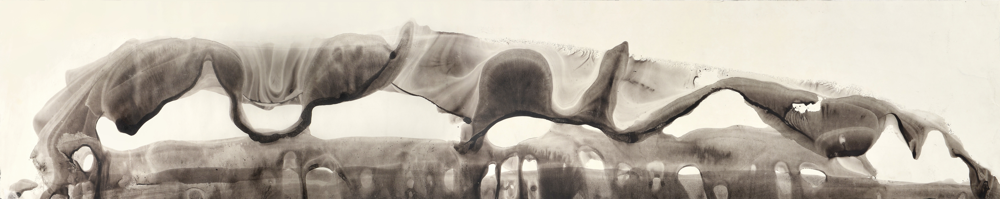

I am a C.L.E. Moore Instructor at Massachusetts Institute of Technology, mentored by Zhiwei Yun. In the summer of 2025, I was a Humboldt Research Fellow at the University of Regensburg, hosted by Denis-Charles Cisinski. From 2024 to 2025 I was a postdoc at the Institute for Advanced Study, mentored by Bhargav Bhatt. From 2019 to 2024 I was a PhD student at the University of California, Berkeley. My advisor is David Nadler.
Email: tong.g.h.zhou@gmail.com
2-350B, Department of Mathematics
Massachusetts Institute of Technology
Cambridge, MA 02139, USA
5. A Microlocal Theory for Zariski-Constructible Sheaves on Rigid Analytic Varieties (2025) (arXiv:2507.18604)
4. Vanishing Cycles for Zariski-Constructible Sheaves on Rigid Analytic Varieties (2025) (arXiv:2504.16365)
3. Character Sheaves on Reductive Lie Algebras in Positive Characteristic (2024) (arXiv:2404.19210)
International Mathematics Research Notices (2024)
2. The Fourier Transform and Characteristic Cycles of Monodromic ℓ-adic Sheaves (2024) (arXiv:2404.01621)
1. On the Stability of Vanishing Cycles of Étale Sheaves in Positive Characteristic (2023) (arXiv:2307.00416)
Selecta Mathematica (2026)
Fall 2021 ~ Spring 2022: Condensed Mathematics Seminar
TEACHING
MIT:
Fall 2026: 18.01, Single Variable Calculus (Paul Seidel)
Spring 2026: 18.03, Differential Equations (Tristan Ozuch-Meersseman)
Fall 2025: 18.02, Multivariable Calculus (John Bush)
Berkeley:
Spring 2024: 16A, Analytic Geometry and Calculus (Ryan Hass)
Fall 2023: 16B, Analytic Geometry and Calculus (Emiliano Gomez)
Fall 2022: 16A, Analytic Geometry and Calculus (Arun Sharma)
Fall 2021: 16B, Analytic Geometry and Calculus (Emiliano Gomez)
Spring 2021: 16B, Analytic Geometry and Calculus (Arun Sharma)
Fall 2020: 16A, Analytic Geometry and Calculus (Thomas Scanlon)
Spring 2020: 1A, Calculus (Mina Aganagić)
Fall 2019: 1A, Calculus (Alexander Paulin)
Miscellanies: translations of Récoltes et Semailles; Andrei Tarkovsky
